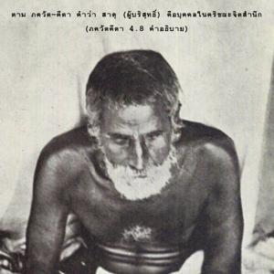
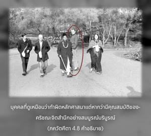
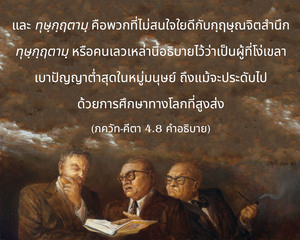

เพื่อจัดส่งคนดีมีธรรมะ และทำลายคนชั่ว พร้อมกับสถาปนาหลักธรรมแห่งศาสนาขึ้นมาใหม่ ตัวข้าจึงปรากฏกัปแล้วกัปเล่า



ตาม ภควัท-คีตา คำว่า สาธุ (ผู้บริสุทธิ์) คือ บุคคลในกฺฤษฺณจิตสำนึก บุคคลที่ดูเหมือนว่าทำผิดหลักศาสนา แต่หากว่ามีคุณสมบัติของกฺฤษฺณจิตสำนึกอย่างสมบูรณ์บริบูรณ์ผู้นี้คือ สาธุ และ ทุษฺกฺฤตามฺ คือ พวกที่ไม่สนใจใยดีกับกฺฤษฺณจิตสำนึก ทุษฺกฺฤตามฺ หรือ คนเลวเหล่านี้อธิบายไว้ว่าเป็นผู้ที่โง่เขลาเบาปัญญาต่ำสุดในหมู่มนุษย์ ถึงแม้จะประดับไปด้วยการศึกษาทางโลกที่สูงส่ง แต่บุคคลผู้ปฏิบัติตนในกฺฤษฺณจิตสำนึกร้อยเปอร์เซ็นต์เป็นที่ยอมรับกันว่าคือ สาธุ แม้ว่าบุคคลนี้อาจไม่ได้รับการศึกษา หรือมีวัฒนธรรมสูง สำหรับพวกที่ไม่เชื่อในองค์ภควานฺไม่จำเป็นที่พระองค์ทรงต้องปรากฏพระวรกายมาทำลายพวกเขา ดังที่ทรงปรากฏมาเพื่อทำลายมาร เช่น ราวณ (ทศกัณฑ์) และ กํส องค์ภควานฺทรงมีผู้แทนมากมายที่มีขีดความสามารถเพียงพอในการทำลายมาร แต่ทรงเสด็จลงมาโดยเฉพาะเพื่อปลอบใจสาวกผู้ไร้มลทินที่ถูกมารข่มเหงอยู่เสมอ มารชอบข่มเหงสาวกแม้เป็นญาติเกี่ยวดองกัน แม้ ปฺรหฺลาท มหาราช ทรงเป็นโอรสของ หิรณฺยกศิปุ ก็ยังถูกพระบิดาสั่งประหาร และแม้ว่าพระนาง เทวกี พระมารดาขององค์กฺฤษฺณทรงเป็นพระขนิษฐภคินีของ กํส พระนางและพระสวามี วสุเทว ยังถูกตามไปประหาร เนื่องจากองค์กฺฤษฺณจะทรงมาประสูติ ฉะนั้น องค์กฺฤษฺณทรงปรากฏเพื่อจัดส่งพระนาง เทวกี มากกว่าที่จะมาสังหาร กํส แต่ทั้งสองสิ่งทรงกระทำควบคู่กันไป ดังนั้น จึงได้กล่าว ณ ที่นี้ว่า เพื่อจัดส่งสาวก และทำลายมารชั่ว องค์ภควานฺจึงทรงปรากฏในอวตารต่างๆ
ใน ไจตนฺย-จริตามฺฤต ของ กฺฤษฺณทาส กวิราช โศลกต่อไปนี้ (มธฺย 20.263-264) จะสรุปหลักการของการอวตาร
สฺฤษฺฏิ-เหตุ เยอิ มูรฺติ ปฺรปญฺเจ อวตเร
เสอิ อีศฺวร-มูรฺติ ‘อวตาร’ นาม ธเร
มายาตีต ปรโวฺยเม สพาร อวสฺถาน
วิเศฺว อวตริ’ ธเร ‘อวตาร’ นาม
“อวตาร หรือ การแบ่งภาคมาเกิดขององค์ภควานฺจะเสด็จลงมาจากอาณาจักรของพระองค์ เพื่อมาปรากฏที่โลกวัตถุ และรูปลักษณ์โดยเฉพาะของบุคลิกภาพสูงสุดแห่งพระเจ้าผู้เสด็จลงมา เรียกว่า การแบ่งภาคมาเกิด หรือ อวตาร อวตารเหล่านี้จะทรงสถิตอยู่ในโลกทิพย์ อาณาจักรแห่งองค์ภควานฺ เมื่อเสด็จลงมาในจักรวาลวัตถุจึงใช้ชื่อว่า อวตาร”
มีอวตารหลายรูปแบบ เช่น ปุรุษาวตารสฺ, คุณาวตารสฺ, ลีลาวตารสฺ, ศกฺตฺยฺ-อาเวศ, อวตารสฺ, มนฺวนฺตร-อวตาร และ ยุคาวตาร ทั้งหมดทรงปรากฏตามตารางเวลาในจักรวาลทั้งหลาย แต่องค์ศฺรีกฺฤษฺณทรงเป็น ภควานฺ องค์แรก ทรงเป็นแหล่งกำเนิดของ อวตาร ทั้งมวล องค์ศฺรีกฺฤษฺณเสด็จลงมาเพื่อจุดประสงค์โดยเฉพาะ คือ ทรงขจัดความวิตกกังวลของสาวกผู้บริสุทธิ์ที่มีความกระตือรือร้นอยากพบพระองค์ในลีลาเดิมแห่ง วฺฤนฺทาวน ดังนั้น จุดมุ่งหมายแรกของ กฺฤษฺณ อวตาร คือ ทรงตอบสนองความปราถนาของสาวกผู้บริสุทธิ์ของพระองค์
องค์ภควานฺตรัสว่า พระองค์ทรงอวตารลงมาในทุกๆ กัป เช่นนี้แสดงให้เห็นว่าทรงอวตารลงมาในกลียุคเช่นกัน ดังที่ได้กล่าวไว้ใน ศฺรีมทฺ-ภาควตมฺ ว่า อวตารในกลียุค คือ องค์ ไจตนฺย มหาปฺรภุ ผู้ทรงเผยแพร่การบูชาองค์กฺฤษฺณด้วยขบวนการ สงฺกีรฺตน (การชุมนุมร่วมกันร้องเพลงสรรเสริญพระนามอันศักดิ์สิทธิ์ขององค์ภควานฺ) และเผยแพร่กฺฤษฺณจิตสำนึกไปทั่วประเทศอินเดีย องค์ ไจตนฺย ทรงทำนายไว้ว่าวัฒนธรรมแห่ง สงฺกีรฺตน จะขจรขจายไปทั่วโลก จากเมืองสู่เมือง และจากหมู่บ้านสู่หมู่บ้าน องค์ ไจตนฺย ทรงเป็นอวตารขององค์กฺฤษฺณ บุคลิกภาพสูงสุดแห่งพระเจ้า ได้อธิบายไว้ในส่วนลับเฉพาะของพระคัมภีร์ที่เปิดเผย เช่น อุปนิษทฺสฺ, มหาภารต และ ภาควต ว่าสาวกขององค์กฺฤษฺณรักขบวนการ สงฺกีรฺตน ขององค์ ไจตนฺย มาก อวตารของภควานฺองค์นี้ไม่สังหารคนเลว แต่จะจัดส่งพวกคนเลวให้หลุดพ้นด้วยพระเมตตาธิคุณอันหาที่สุดมิได้